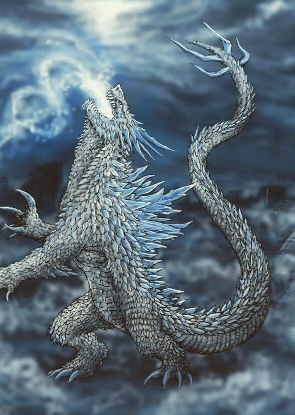

About Shimo

Shimo (霜 Shimo?) is a reptilian Titan created by Legendary Pictures and is the secondary antagonist of the 2024 film, Godzilla x Kong: The New Empire. Shimo is an ancient monster that holds chilling power over cold temperatures which made her a dangerous force of the Hollow Earth. As a prisoner of the tyrannical Skar King, Shimo was forced to obey his commands, assisting him in his desire to dominate the entire planet.
History
Kong: Skull Island
In 1973, Houston Brooks and San Lin briefed James Conrad and Mason Weaver on multiple other monsters who once ruled the world
alongside Kong. This included Ghidorah, along with Godzilla, Mothra, and Rodan, who were all shown to the two via classified
Monarch cave paintings.
2016
Ghidorah was discovered under the ice via the Reolus satellite, which detected an extreme electromagnetic pulse fluctuation
from the frozen creature.[3] In 2016, Vivienne Graham led an effort to build a containment and research facility (Outpost 32)
around Ghidorah. Her classified field notes contained the mysterious footnote, "The devil has three heads."[1] The creature was
later dubbed 'Monster Zero' by Monarch scientist Dr. Emma Russell.[27]
Godzilla: King of the Monsters
GhidorahFrozen Ghidorah is first seen frozen in Antarctic ice at Outpost 32. Eco-terrorist organization leader Alan Jonah and
rogue Monarch agent Emma Russell free him with explosives and awaken him with the ORCA.
Upon awakening, Ghidorah slaughters the G-Team forces on the ground before turning his attention to a grounded Osprey aircraft. Shortly
after, Godzilla emerges from the ice and the two Titans engage in battle, decimating the remains of Outpost 32. Upon briefly
gaining the upper-hand over Godzilla, Ghidorah targets and eats Dr. Graham alive, but is distracted from targeting the
remaining humans on the ground by Monarch's aerial forces firing missiles to distract him. When Godzilla recovers amid
Ghidorah's distraction, Ghidorah escapes into the sky and flees Antarctica, rapidly forming a growing cyclone around
himself as he passes over Brazil.
Personality
Despite her past of wreaking havoc on Earth and triggering the previous Ice Age, Shimo's true nature is a peaceful and benevolent Titan whose violent actions actually come from being coerced to do the Skar King's bidding. She resents the Skar King deeply for his mistreatment and control, defiantly roaring in her attempts to resist his orders. Shimo also demonstrates a reasonable level of intelligence: when her control is momentarily broken, she acts swiftly, freezing the Skar King solid, allowing Kong to deliver the final blow. This highlights discernment, loyalty, and ability to make choices aligned with her own values. Once free, Shimo instinctively chooses to be with Kong and Suko, forming a strong bond. She affectionately nuzzles Kong and delights in being petted, finding joy in their companionship.
Design
The design of Shimo went through several phases of drafting. Initially planned as an ice version of Godzilla, the lack of information with this concept led to the idea being dropped. According to designer Jared Krichevsky, Shimo's intial designs were too "dragony" and it took a long time before he finally came up with the right design. Shimo's final design was based on several real-world animals: her overall appearance is based on Komodo dragons and polar bears, and facial features modeled after chameleons.
Shimo is an enormous quadrupedal creature, boasting a robust frame covered in dense reptilian scutes, a striking white coloration, blue claws on each foot, and an extremely lengthy tail ending in four blue crystal thagomizers. Her head possesses two forward-facing blue eyes, a crest adorned with iridescent blue crystalline spikes protruding at a horizontal angle from the back of her head. Similar translucent spikes run down her back, and a continuous row of sharp scutes are located on her sides run from her neck to the thagomizers on her tail. Despite her large size, Shimo's abdomen and legs are very slim.